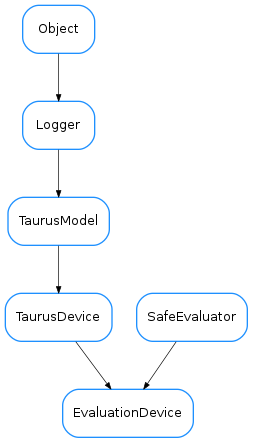

EvaluationDevice¶

-
class
EvaluationDevice(name, **kw)[source]¶ Bases:
taurus.core.taurusdevice.TaurusDevice,taurus.core.util.safeeval.SafeEvaluatorThe evaluator object. It is a
TaurusDeviceand is used as the parent ofEvaluationAttributeobjects for which it performs the mathematical evaluation.See also
Warning
In most cases this class should not be instantiated directly. Instead it should be done via the
EvaluationFactory.getDevice()